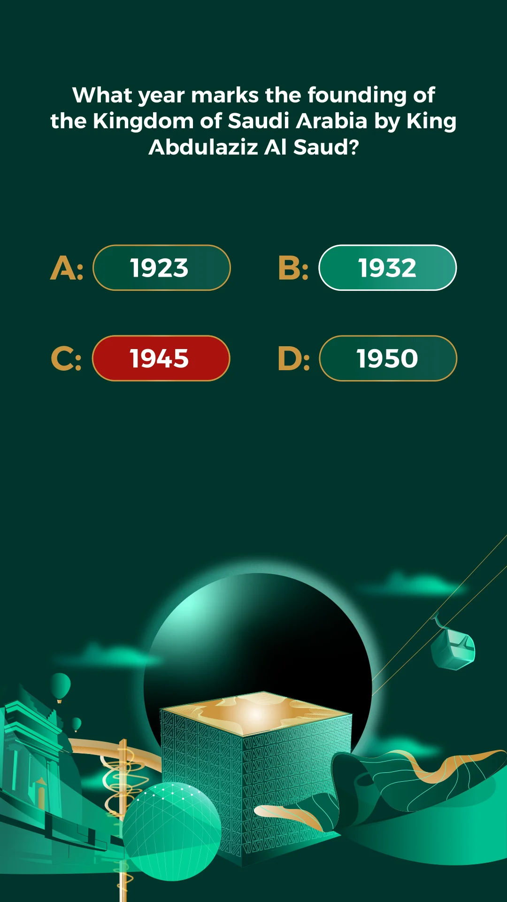

Four large answer pills
The lower third combines architectural forms, a cable car, balloons and a glowing green orb in a continuous illustration.
A clear question above an illustrated setting.
Explore the story
Separate question, response and decorative content on a portrait screen.
Four large answer pills sit between the prompt and a green-and-gold architectural composition. Teal and red answer treatments show contrasting feedback states.
The lower third combines architectural forms, a cable car, balloons and a glowing green orb in a continuous illustration.
The complete native artboard puts a history question at the top, four pill-shaped answers in the middle and a decorative architectural scene below.
One answer uses a teal fill and white outline while another uses red, so the saved layout reads as a study of answer feedback rather than an untouched question state.
Explore the complete compositions and interface states. Select any image for a closer look.
Structure, interaction and visual decisions that give the work its character.
RoleContribution awaiting confirmation
AssetsPrivate evidence draft. Individual contribution, implementation and public-use permission remain unverified. Native files establish saved artwork, not personal authorship or original modeling. Supplied, licensed, collaborator and AI-assisted components require separate attribution. P298-05 is an event container; this record represents its QnA Machine interface only and is not evidence of a separate commission. Illustration provenance remains unresolved.
StatusPrivate native-artwork draft; contribution, implementation and public use unverified